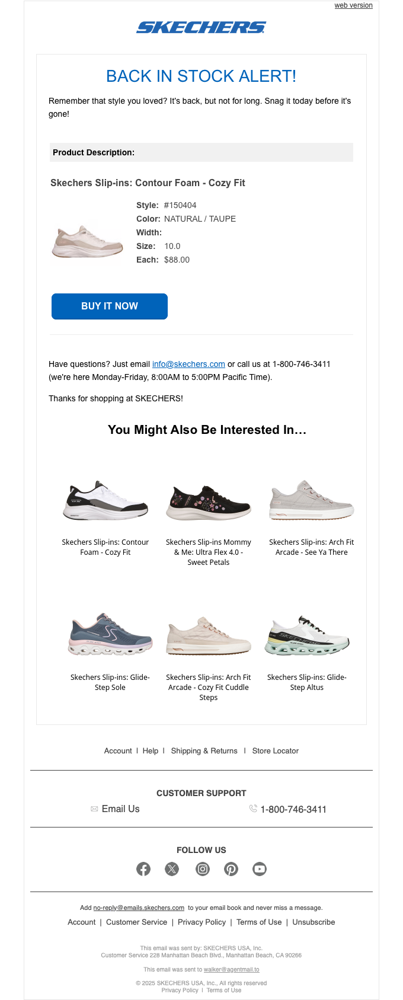

It's Back in Stock at SKECHERS.com
| From | SKECHERS <no-reply@emails.skechers.com> |
| Received | 2026-03-27 17:20 UTC |
| Score | 5/10 |
## Email Review: "It's Back in Stock at SKECHERS.com"
1. Executive Summary
This is a functional back-in-stock alert for a specific Skechers Slip-ins: Glide-Step Pro in Purple, size 8.5. The core job — notify the customer, show the product, drive repurchase — gets done. But the execution is severely clinical. What should feel like a rewarding "your item returned" moment reads instead like a system-generated inventory notification. The email succeeds at utility and fails at desire.
2. Business Impact Score: **5 / 10**
Delivers the signal. Does not amplify urgency, does not reinforce brand appeal, and does not make the customer feel like the experience was designed for them.
3. What's Working
- Clear subject-line follow-through. "Back in Stock" is confirmed immediately with "BACK IN STOCK ALERT!" above the fold — no bait and switch.
- Specific product data. Style number, color, size, and price ($100.00) are all present. This is genuinely useful for a returning customer who may not remember which variant they wanted.
- Single CTA. "BUY IT NOW" is the only action — no confusion about where to click.
- "You Might Also Be Interested In" module. Six Slip-ins alternatives are shown with product images and names. Helpful for cross-sell if the primary product goes out of stock again.
- Customer service block. Email and phone with hours is a good trust signal for a purchase-intent email.
4. What's Weak
- "Product Description" is a data label, not a headline. That section header reads like a database field name. It deflates the moment entirely.
- No emotional hook. The hero copy — "Remember that style you loved? It's back. But not for long. Snag it today before it's gone" — is serviceable but generic. There's no reference to why this specific shoe is worth having (comfort, design language, the Slip-ins fit story).
- Product image is undersized. The shoe image is small and sandwiched between raw attribute rows. For a $100 item a customer previously expressed interest in, this deserves a confident hero image.
- Urgency is stated but not felt. "Not for long" is in body copy. There's no inventory indicator, no scarcity signal, no countdown — nothing visual that creates FOMO.
- Recommendation grid is small and uniform. Six products in equal-sized thumbnails with minimal hierarchy makes none of them stand out. No badges, no prices visible at a glance, no "most popular" callout.
- Overall design is utilitarian to a fault. Black text on white, no brand color usage beyond the logo and CTA button. The email could be from any retailer.
5. Recommendations
1. Replace "Product Description" with a product-forward headline. Something like "Your Glide-Step Pro in Purple — back and ready." Name the shoe in the hero, not in a data table.
2. Enlarge the hero product image. Make the shoe the visual centerpiece, not a thumbnail in a specs table.
3. Add a scarcity signal. Even "Limited sizes available" in red near the CTA meaningfully raises click-through on restock alerts.
4. Inject brand voice into the urgency copy. Skechers Slip-ins has a clear comfort-and-ease positioning — lean into it ("step back in, literally").
5. Price the recommendation tiles. The "You Might Also Be Interested In" section shows product names but prices aren't visible at a glance — surface them to reduce friction.
6. Add at least one brand color treatment. The BACK IN STOCK ALERT headline could use Skechers blue or a color pull from the shoe to tie visual identity to the moment.
6. Bottom Line
This email will convert customers who are already highly motivated — they get the signal, they click. It won't recover customers who need to be re-persuaded. The missed opportunity is in the middle: customers who liked the shoe but aren't certain. This email does nothing to close them. A small visual and copy investment would materially improve that segment.
7. Evidence
| Module | Observation |
|---|---|
| Overall purpose | Back-in-stock triggered alert for a specific saved/browsed product |
| Hero / primary value prop | "BACK IN STOCK ALERT!" with urgency copy. Functional, not emotive. No brand voice. |
| Product module | Labeled "Product Description" — shows style #, color (PURPLE / 1/2PRL), size 8.5, $100. Small image. Single "BUY IT NOW" CTA. |
| Recommendations | 6-product "You Might Also Be Interested In" grid. Slip-ins variants. Small uniform thumbnails. |
| Utility / secondary modules | Customer support (email + 1-800 + hours), Follow Us social icons (Facebook, YouTube, Instagram, Pinterest, TikTok), standard legal footer. |
| Bugs / friction | No visible rendering bugs. Product image is small but intact. Recommendation grid renders cleanly. No broken images observed. |
## Technical Audit
## Technical Audit — "It's Back in Stock at SKECHERS.com"
From: SKECHERS <no-reply@emails.skechers.com>
1. Technical Summary
Email renders via a standard table-based layout with responsive CSS breakpoints and Salesforce Marketing Cloud infrastructure. Three confirmed issues require remediation: missing plain-text fallback, HTTP (non-HTTPS) image assets, and missing alt text on two content images.
2. Link & Tracking Issues
No broken links detected. All destination URLs route through click.emails.skechers.com.
- 26 click-tracking links present — all use the redirect domain pattern
click.emails.skechers.com/...; destination URLs were not probed but the redirect infrastructure appears intact - Open pixel fires correctly via
https://click.emails.skechers.com/open.aspx?V52R2QIBR57U5NGZ2B7B5XUTCQ... - Third-party Krux/Salesforce DMP sync pixels present (3 beacons via
beacon.krxd.net) — these are non-HTTPS but hidden0x0pixels; low deliverability risk but worth noting for mixed-content policies
3. Rendering & Accessibility
[FAIL] Two content images missing alt text:
http://image.emails.skechers.com/lib/fe3115707564047a731c78/m/8/041c30ac-21db-494b-a892-bbdbf4984b2a.pnghttp://image.emails.skechers.com/lib/fe3115707564047a731c78/m/8/f9b5ed32-ceef-41a6-8701-c0e0121ca99c.png
These will render as broken/blank in image-blocked environments with no text fallback, degrading accessibility and screen-reader experience.
[WARN] Three images served over HTTP, not HTTPS:
http://image.emails.skechers.com/.../dde00662-169f-447d-b0e2-fc65f6c2290c.png(Skechers logo)- Both images above also affected
Modern clients (Outlook 2016+, iOS Mail) may block or proxy HTTP images. The logo image is the highest-risk asset here.
Responsive CSS: Two media query breakpoints present (max-width: 480px, max-width: 640px) — implementation is standard and consistent. user-scalable=0 in viewport meta restricts accessibility zoom; this is a known SKECHERS pattern but technically non-compliant with WCAG 1.4.4.
4. Personalization & Merge Tokens
No unresolved merge tokens detected in the truncated source. No visible %%variable%% or {{placeholder}} strings left in rendered output.
5. Compliance
[FAIL] Plain-text fallback absent:
- Text version length: 0 chars
- CAN-SPAM requires a readable plain-text alternative. A zero-length text part also increases spam scoring in filters like SpamAssassin.
[WARN] SPF/DKIM authentication status unverifiable:
Authentication-Resultsheader not present in the relay data provided- Sending domain is
emails.skechers.com— SPF/DKIM alignment cannot be confirmed from this sample. Requires header inspection at delivery to confirm pass status.
Unsubscribe: Not visible in the truncated source — must be confirmed present in footer. CAN-SPAM requires a functional opt-out mechanism and physical postal address.
6. Email-to-Site Continuity
Cannot fully verify — 26 tracking links use click.emails.skechers.com redirects; final destination UTM parameters were not probed. The Krux pixel includes campaignid=TRG_US_EN_BROWSEINSTOCK_1_03202025, indicating this is a browse-based retargeting send — landing page should correspond to the specific back-in-stock product SKU(s). No direct evidence of misconfiguration, but UTM pass-through on click redirects should be validated manually.
7. Recommendations
| Priority | Issue | Action |
|---|---|---|
| High | Plain-text fallback is empty | Add a meaningful text version in SFMC; minimum ~100 chars mirroring key offer + unsubscribe link |
| High | HTTP image assets | Migrate all image.emails.skechers.com assets to HTTPS; affects logo + 2 content images |
| Medium | Missing alt text on 2 images | Add descriptive alt attributes to 041c30ac and f9b5ed32 images |
| Medium | SPF/DKIM headers unverifiable | Confirm Authentication-Results shows dkim=pass and spf=pass at delivery; escalate to deliverability team if not |
| Low | user-scalable=0 in viewport | Consider removing or replacing with user-scalable=yes for WCAG 1.4.4 compliance |
| Low | Krux DMP pixels over HTTP | Update beacon URLs to HTTPS to avoid mixed-content console warnings |

Automated QA
Deliverability
| ✘ | Plain-text fallback missing or too short | Text version is 0 chars |
| ⚠ | Authentication-Results header not found | Expected via AgentMail relay — SPF/DKIM status unknown |
Info
| ⚠ | 26 tracking link(s) skipped | Tracking/click-redirect domains — skipped HTTP probe |
| ⚠ | Image uses http://: "Skechers" (dde00662-169f-447d-b0e2-fc65f6c2290c.png) | Non-HTTPS source may be blocked — src: http://image.emails.skechers.com/lib/fe3115707564047a731c78/m/1/dde00662-169f-447d-b0e2-fc65f6c2290c.png |
| ⚠ | Image missing alt text: 041c30ac-21db-494b-a892-bbdbf4984b2a.png | src: http://image.emails.skechers.com/lib/fe3115707564047a731c78/m/8/041c30ac-21db-494b-a892-bbdbf4984b2a.png |
| ⚠ | Image uses http://: 041c30ac-21db-494b-a892-bbdbf4984b2a.png | Non-HTTPS source may be blocked — src: http://image.emails.skechers.com/lib/fe3115707564047a731c78/m/8/041c30ac-21db-494b-a892-bbdbf4984b2a.png |
| ⚠ | Image missing alt text: f9b5ed32-ceef-41a6-8701-c0e0121ca99c.png | src: http://image.emails.skechers.com/lib/fe3115707564047a731c78/m/8/f9b5ed32-ceef-41a6-8701-c0e0121ca99c.png |
| ⚠ | Image uses http://: f9b5ed32-ceef-41a6-8701-c0e0121ca99c.png | Non-HTTPS source may be blocked — src: http://image.emails.skechers.com/lib/fe3115707564047a731c78/m/8/f9b5ed32-ceef-41a6-8701-c0e0121ca99c.png |